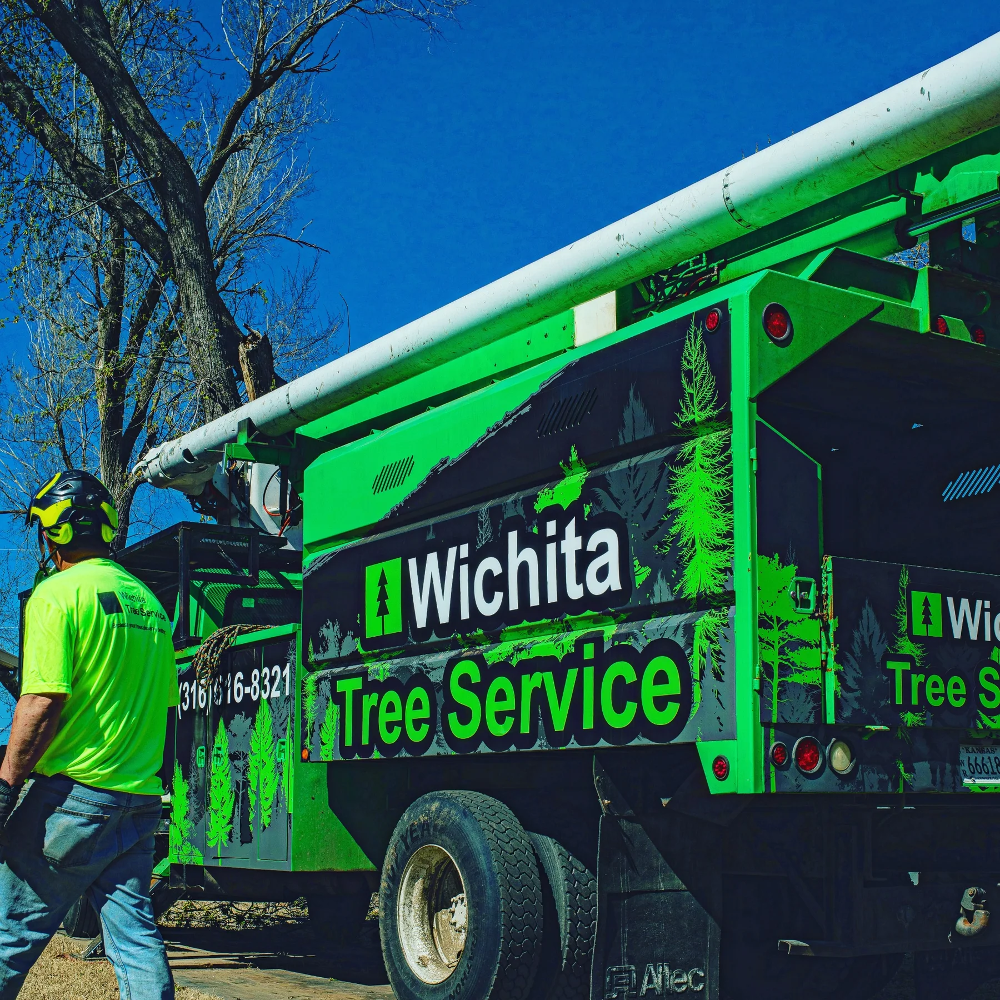
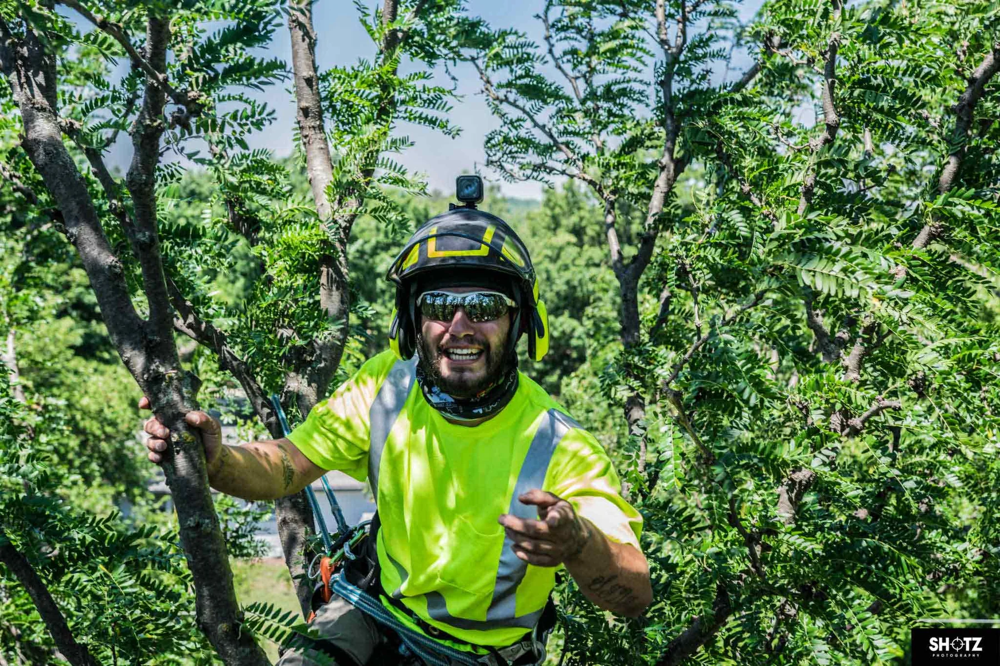
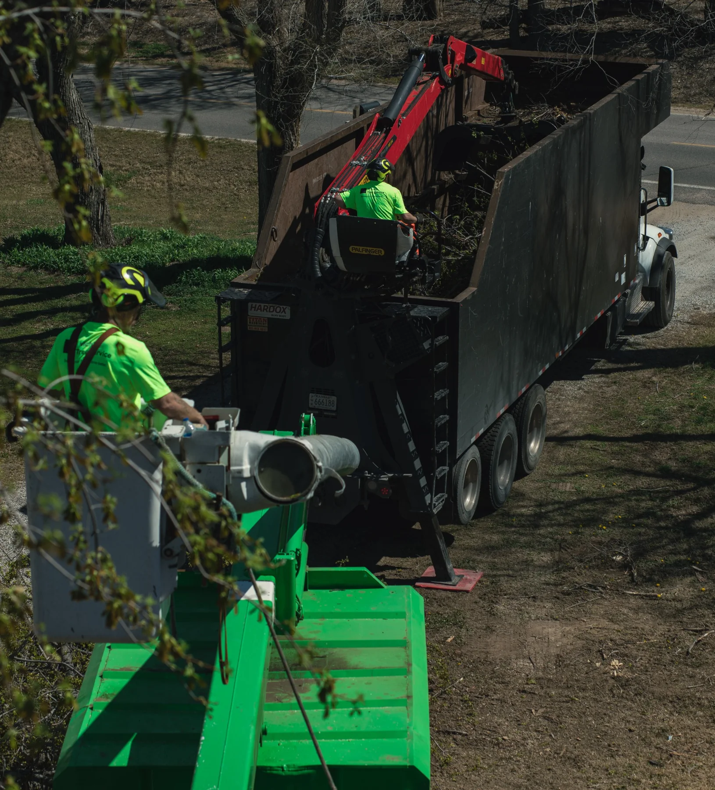
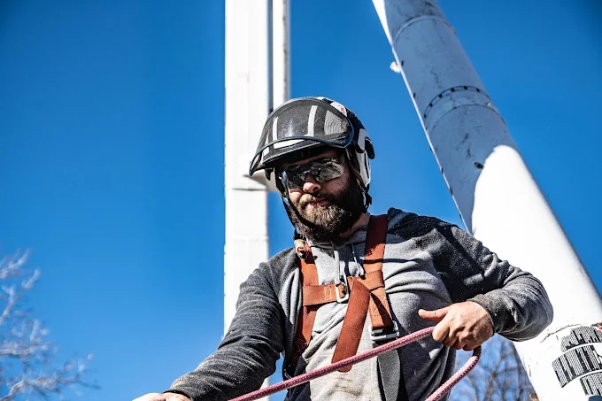

Tree Removal
Safe removal of dead, hazardous, storm-damaged, and hard-to-access trees using the right equipment for the job.
Contact
For tree removal, trimming, storm damage, stump grinding, plant health care, municipal work, or debris hauling in the Wichita area.
Arborist-led tree care in Wichita, Kansas
Wichita Tree Service serves residential, commercial, municipal, and government customers with professional tree work backed by experienced crews, specialized equipment, and arborist-level knowledge.

Tree removal • Pruning • Stump grinding • Storm cleanup • Land clearing
Services
From a single backyard tree to citywide storm cleanup, our team is built for safe, efficient tree work.
Safe removal of dead, hazardous, storm-damaged, and hard-to-access trees using the right equipment for the job.

Professional pruning focused on structure, clearance, deadwood removal, end-weight reduction, and long-term tree health.

Stump grinding for removals, cleanup, landscape restoration, and trip hazard reduction.

Tree injections, deep root feeding, pest and disease support, and arborist recommendations for declining trees.

Emergency tree removal, debris hauling, crane-assisted removals, high-hanger cleanup, and regional storm response.
Brush clearing, right-of-way work, lot cleanup, grapple hauling, and wood waste handling.

About Wichita Tree Service
Wichita Tree Service was founded by Robert Phillips in 2012 while he was attending college in Kansas. What started as a small tree service has grown into a full-service tree care company serving homeowners, businesses, municipalities, and government customers.
Our work is led by arborist knowledge and supported by crews, bucket trucks, grapple trucks, cranes, tracked lifts, mini-skids, stump grinders, and recycling equipment. We focus on doing the job safely, cleaning up well, and protecting tree health whenever preservation is the right answer.
Commercial, Municipal & Storm Response
Wichita Tree Service handles street-side removals, storm debris cleanup, right-of-way clearing, crane removals, and regional disaster response work.
City tree removals, clearance pruning, public right-of-way work, hauling, and project documentation.
Grapple trucks, crane support, skid steers, loaders, and crews ready for storm-damaged trees and debris hauling.
Green waste handling, mulch production, firewood material, and responsible reuse of tree debris where practical.
Bucket trucks, grapple trucks, loaders, lifts, and experienced crews help move projects faster and keep jobsites cleaner.
Gallery
Bucket trucks, climbers, arborist work, and debris cleanup from the field.
Need a tree looked at?
Call, text, or send a message with your address, photos, and what you need done.
Contact
Phone: 316-616-8321
Email: robert@wichita-treeservice.com
Address: 4631 W 47th St S, Wichita, KS 67215
Services: Wichita, Sedgwick County, and surrounding Kansas communities.
Website: www.wichita-treeservice.com